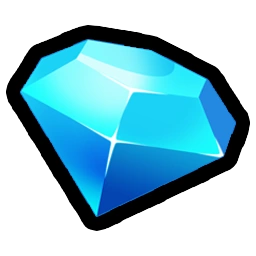
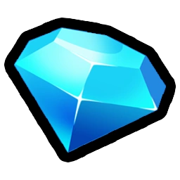

Upgrades are one of the main features in Pets GO!.
They provide additional gameplay elements in exchange for Currencies such as
 Coins or  Diamonds.
Coins or  Diamonds.
List of Upgrades
Currently, there are a total of 547 (five hundred fourty-seven) upgrades.